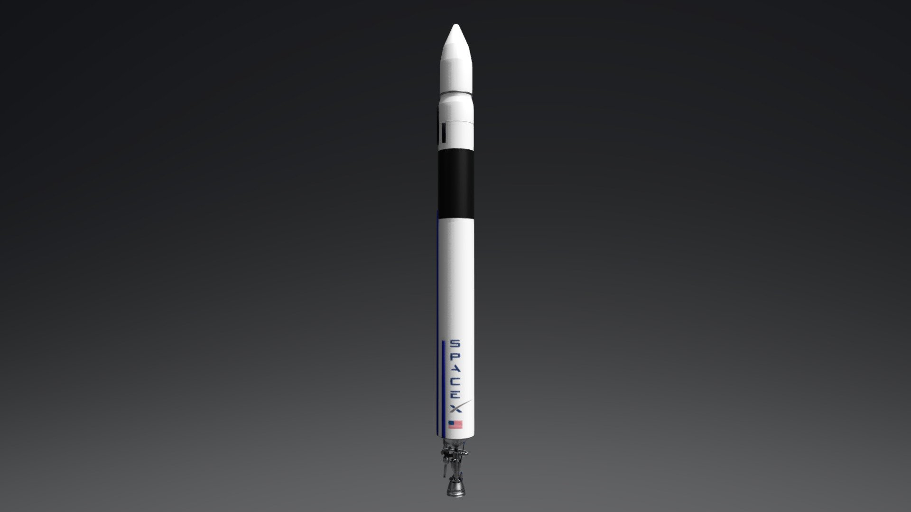

Falcon 1 ist die erste Trägerrakete, die von SpaceX produziert wurde. Ihr Erstflug fand am 24. März 2006 statt. Die Rakete hatte eine Nutzlastkapazität von etwa 670 Kilogramm für den erdnahen Orbit (LEO) und wurde von dem Merlin 1C-Triebwerk angetrieben, wobei sie eine orbitale Geschwindigkeit von etwa 28.000 km/h erreichte. Leider endeten die ersten drei Starts erfolglos. Aufgrund dessen erreichte Falcon 1 jedoch am 28. September 2008 erfolgreich den Orbit und wurde damit die erste private Rakete, die diese Leistung erbrachte.


/2023/01/17/image/jpeg/hstIa6uTAe6W2pHqjLULfHHJLaS7Gfpjygja859Q.jpg)